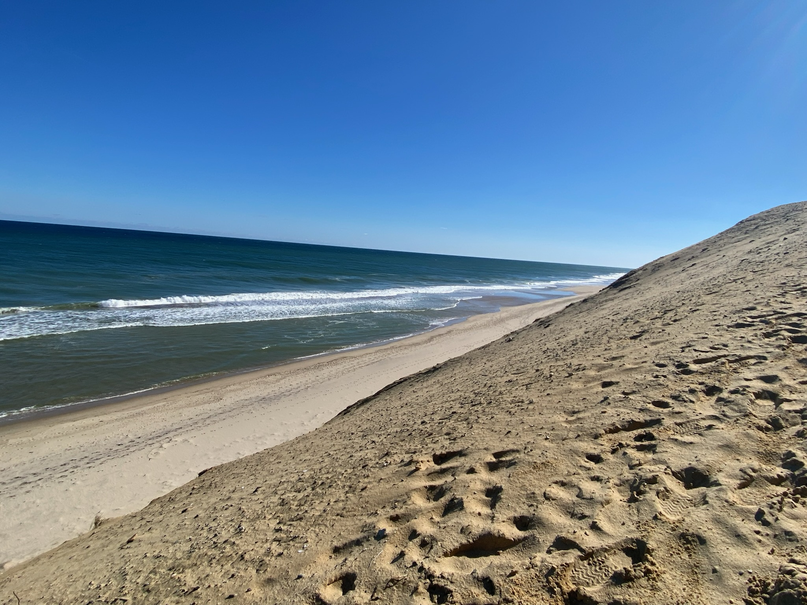
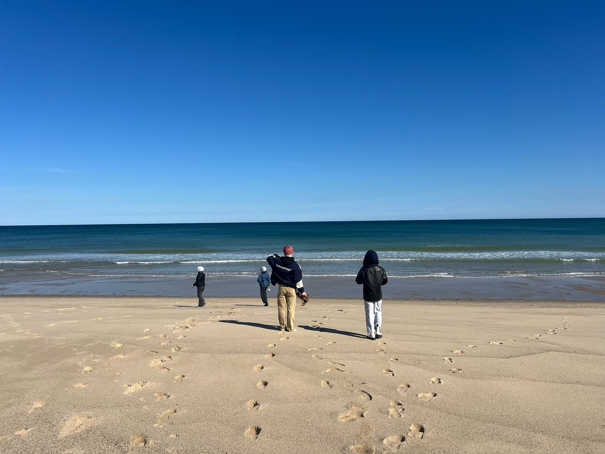
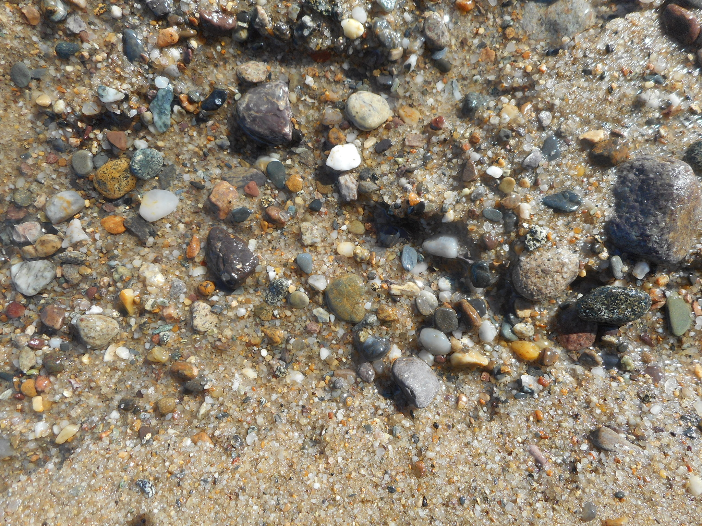
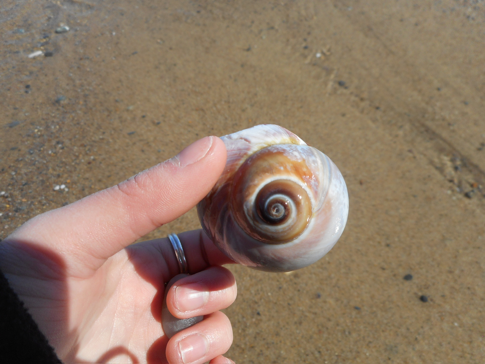
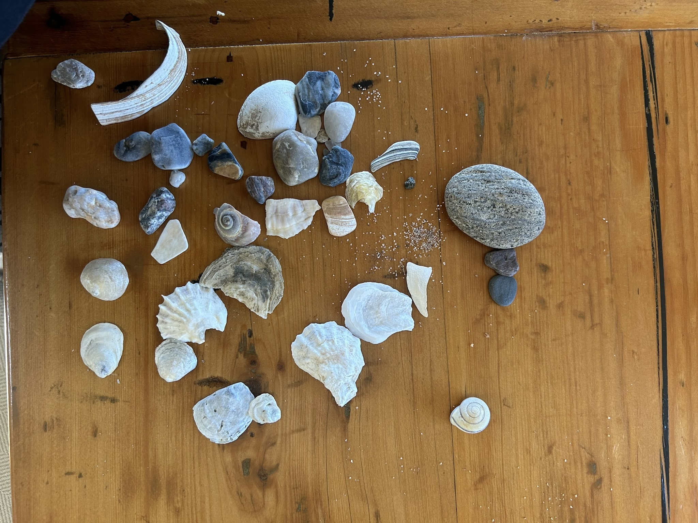

Two Wellfleet Beaches: A Comparison
Cahoon Hollow

- Cahoon Hollow is home to the Beachcomber, a popular restaurant and bar that overlooks the beach. It's very popular among tourists, especially young people. See more information here.
- Because of the Beachcomber, this beach parking lot usually fills up by mid-morning.
- The dune is moderately steep, difficult for people with mobility issues.
- Cahoon Hollow tends to have a drop-off near the shore, a drawback for families with children.
Newcomb Hollow

- Newcomb Hollow has a food truck located at the top of the dune, a great place to grab a snack before heading down to the water.
- Newcomb's dune is fairly flat, easier to get up and down.
- Newcomb is one of the few Wellfleet beaches where beach fires are permitted. For more information, see here.
- This beach tends to have a sandbar, making it safer for less strong swimmers and young children.



Resources

Ponds

Bays

Home

Info